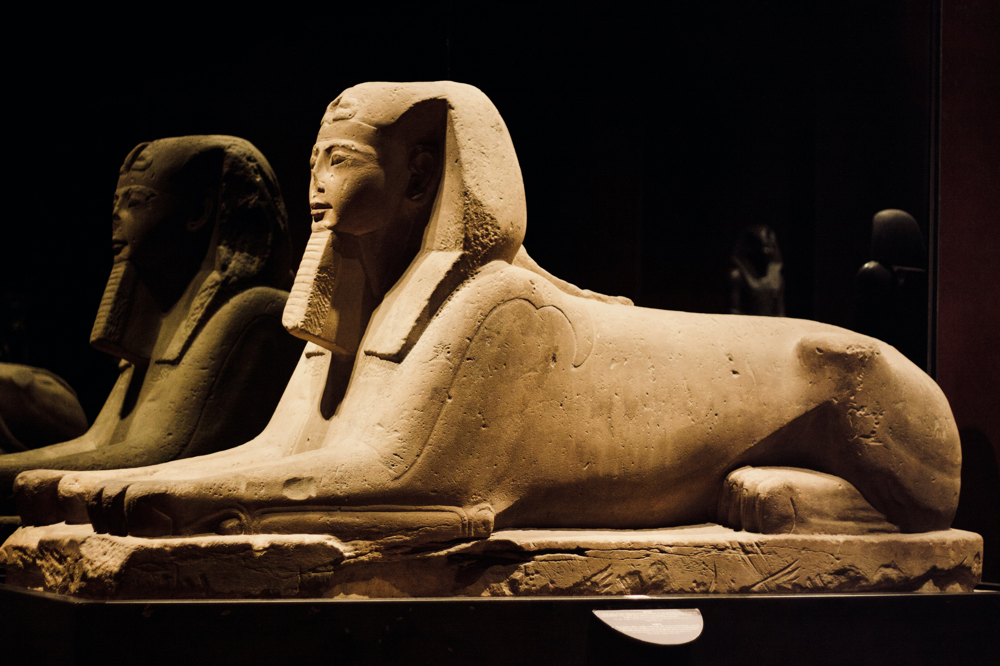
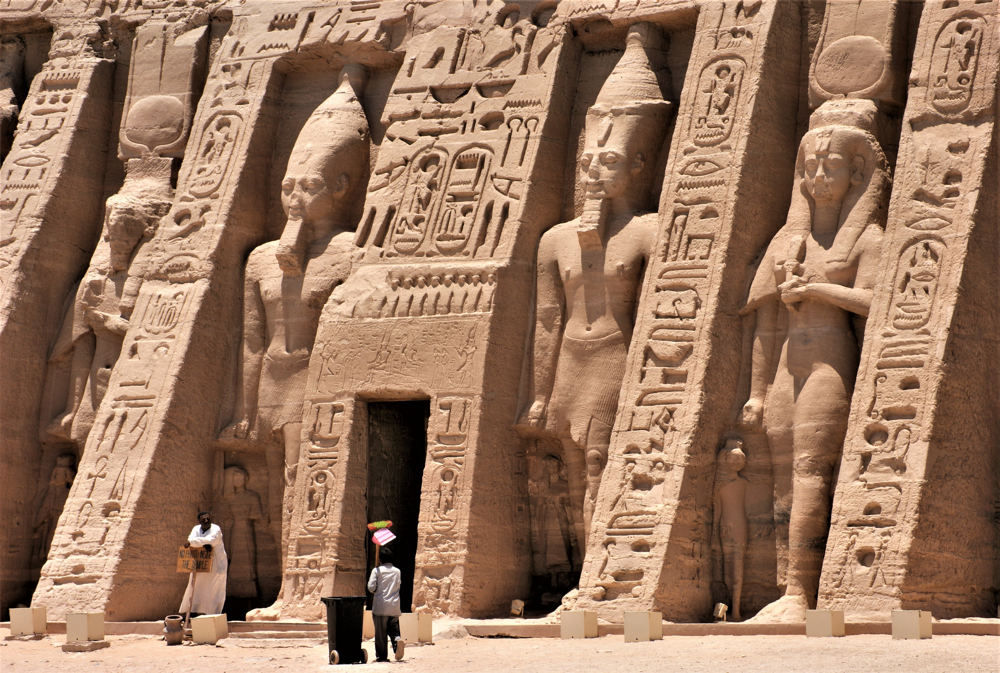
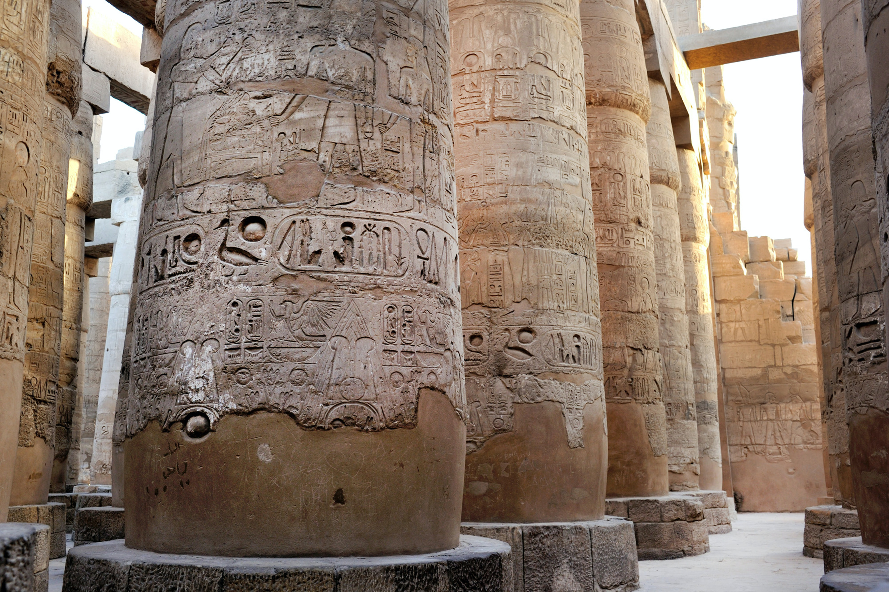

Aceca de

La enigmática esfinge cuenta con una altura de cerca de 20 metros y algo más de 70 metros de longitud, y está dotada de cabeza humana y cuerpo de león, algo que para los antiguos egipcios reunía en una misma figura la inteligencia y la fuerza.
Se cree que fue creada alrededor del año 2.500 a.C. como parte del complejo funerario de Kefrén con la finalidad de convertirse en el guardián que protegiera su tumba.

Actualmente la esfinge no conserva prácticamente ninguno de los vivos colores que la vistieron en el pasado, cuando el cuerpo y su gran cabeza eran de color rojo y la prenda egipcia que cubría su cabeza (nemes) presentaba rayas blancas y azules.
La cabeza de la esfinge se encuentra mejor conservada que su cuerpo debido a la dureza de la piedra en la que se realizó, aunque el cuerpo contara con la ventaja de pasar gran parte de su historia enterrado en la arena, algo que ayudó a preservarlo de la erosión.
Lugares para visitar

Las Pirámides de Giza
Las Pirámides de Giza, la única de las 7 Maravillas del Mundo Antiguo que se conserva, es uno de los lugares más impresionantes que visitar en Egipto y también en el mundo. Situadas a menos de 20 kilómetros de El Cairo, las 3 grandes pirámides con las tumbas de los faraones Keops, Kefrén y Micerinos, destacan por encima del resto de monumentos y pirámides del país.
Durante su construcción alrededor del 2500 a.C., el exterior se recubría de grandes bloques de piedra caliza formando pirámides de piedra blanca en las que se reflejaba la luz del sol y mediante las que los faraones creían que alcanzarían la inmortalidad.
Al lado las Pirámides de Egipto se encuentra la siempre vigilante Esfinge, con sus más de 20 metros de altura, que junto a las pirámides, son uno de los símbolos del país.

Abu Simbel, uno de los mejores lugares que visitar en Egipto
En Nubia, al sur de Egipto, se encuentra un lugar que hace sombra en belleza a las Pirámides de Egipto: Abu Simbel.
Esta zona arqueológica destaca por los dos templos excavados en roca que ordenó construir el gran faraón Ramsés II en el siglo XIII a. C. para conmemorar una victoria de guerra y con una historia increíble ya que ambos templos, en honor al faraón y a su esposa favorita, Nefertari, se tuvieron que trasladar en 1968 a una ubicación más alta, a consecuencia de la construcción de una presa en el río Nilo, haciéndolos todavía más conocidos al mundo
Al igual que a las Pirámides, te recomendamos hacer la visita a primera hora, para evitar las horas de más calor y más gente, y alojarte una noche cerca del complejo, para disfrutar también del espectáculo de luces nocturno.

Karnak
Karnak es un conjunto de templos situado en Tebas, la región que fue durante más de 1000 años la capital del antiguo Egipto, en la que durante 2000 años más de 30 faraones fueron compitiendo y construyendo los mejores templos y estatuas en honor al gran dios Amón.
Este recinto, compuesto por templos, obeliscos, estatuas y un gran lago sagrado, es el segundo lugar más turístico del país, por detrás de las pirámides además de ser otro de los lugares que visitar en Egipto más imprescindibles.
Visita 360°

Dale click a la imagen
La Gran Esfinge de Gizar
Al inicio de la historia de Egipto, las esfinges representaron la fuerza y la sabiduría del rey. Entre todas ellas destaca la Gran Esfinge de Gizeh, erigida en tiempos de la dinastía IV, la época más gloriosa del Imperio Antiguo.
Cuerpo de león y cabeza humana. Este extraño ser híbrido, al que conocemos con el término de esfinge, de origen griego, es uno de los más llamativos del arte egipcio. Los antiguos egipcios lo denominaban Shesep-ankh, «imagen viviente», nombre que daban a las estatuas reales. Simbolizaban la idea de fuerza y poder, y generalmente se representaba al faraón bajo esta forma. Así lo indica el hecho de que las esfinges portaran el pañuelo real nemes, el ureo (representación de la diosa cobra Uadyet) y a menudo la barba postiza ritual, signos característicos de los soberanos egipcios.
En época de la dinastía IV, se esculpió en la meseta de Gizeh un increíble monumento: la Gran Esfinge. Se atribuye al rey Kefrén, aunque algunos autores creen que es obra de Keops, artífice de la Gran Pirámide.
En Egipto, desde tiempos predinásticos y posiblemente antes, la figura del león se asoció a los jefes tribales y más tarde a los faraones. El rey era el guardián y protector de su pueblo, al que conducía victorioso al combate contra sus enemigos. Es por ello natural que, en el pensamiento de aquellos pueblos primitivos, la figura de este vigoroso y bello animal fuera asimilada al monarca. Por sus características, los egipcios imaginaron el león como un poderoso guardián, y por ello se lo representaba en amuletos, muebles y también en las puertas de los templos, en relieve o esculpido. Asimismo, algunos relieves del Imperio Nuevo muestran un león domesticado que acompaña al monarca en las batallas o en ceremonias religiosas. Es muy probable, pues, que la imagen de la esfinge surgiera en la mente de los egipcios como una manera de fundir la belleza y la ferocidad del león con la sabiduría del rey.